2024 Higher Physics - Paper 2 marking instructions
Source: Scottish Qualifications Authority (SQA) / Qualifications Scotland. This is a StemInteract HTML companion, not an official HTML edition. Selectable text is supplied alongside original page images. Use the images or original PDF for equations, powers, fractions, vector notation, tables and diagrams; text extraction cannot fully preserve mathematical layout.
Jump to a question
PDF page 1
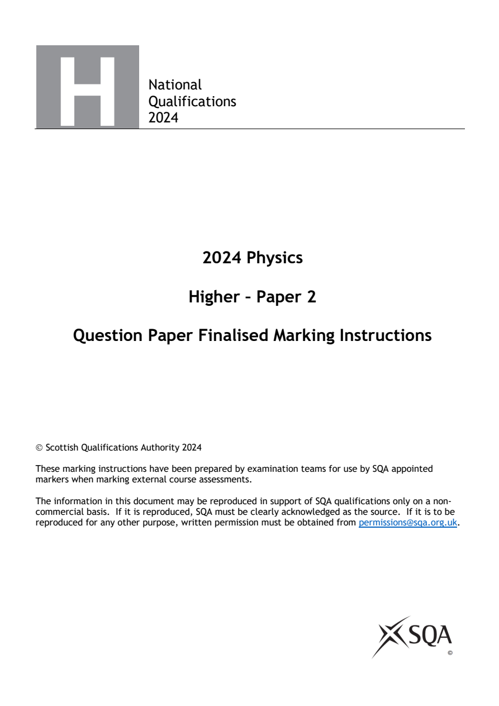
Selectable page text
National
Qualifications
2024
2024 Physics
Higher – Paper 2
Question Paper Finalised Marking Instructions
Scottish Qualifications Authority 2024
These marking instructions have been prepared by examination teams for use by SQA appointed
markers when marking external course assessments.
The information in this document may be reproduced in support of SQA qualifications only on a non-
commercial basis. If it is reproduced, SQA must be clearly acknowledged as the source. If it is to be
reproduced for any other purpose, written permission must be obtained from permissions@sqa.org.uk.PDF page 2
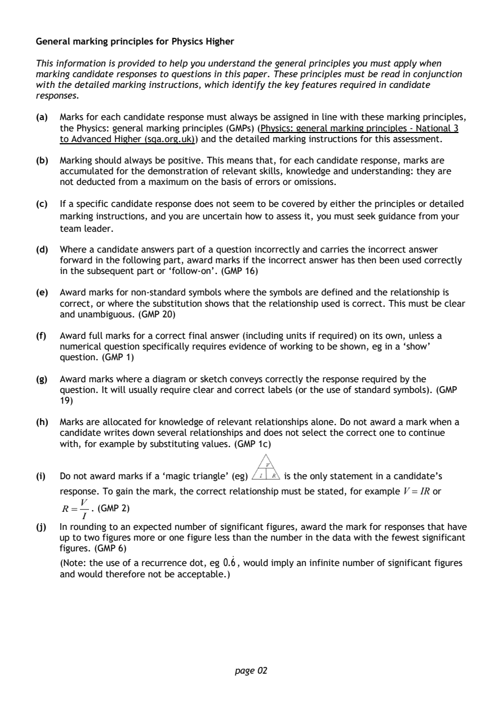
Selectable page text
General marking principles for Physics Higher
This information is provided to help you understand the general principles you must apply when
marking candidate responses to questions in this paper. These principles must be read in conjunction
with the detailed marking instructions, which identify the key features required in candidate
responses.
(a) Marks for each candidate response must always be assigned in line with these marking principles,
the Physics: general marking principles (GMPs) (Physics: general marking principles - National 3
to Advanced Higher (sqa.org.uk)) and the detailed marking instructions for this assessment.
(b) Marking should always be positive. This means that, for each candidate response, marks are
accumulated for the demonstration of relevant skills, knowledge and understanding: they are
not deducted from a maximum on the basis of errors or omissions.
(c) If a specific candidate response does not seem to be covered by either the principles or detailed
marking instructions, and you are uncertain how to assess it, you must seek guidance from your
team leader.
(d) Where a candidate answers part of a question incorrectly and carries the incorrect answer
forward in the following part, award marks if the incorrect answer has then been used correctly
in the subsequent part or ‘follow-on’. (GMP 16)
(e) Award marks for non-standard symbols where the symbols are defined and the relationship is
correct, or where the substitution shows that the relationship used is correct. This must be clear
and unambiguous. (GMP 20)
(f) Award full marks for a correct final answer (including units if required) on its own, unless a
numerical question specifically requires evidence of working to be shown, eg in a ‘show’
question. (GMP 1)
(g) Award marks where a diagram or sketch conveys correctly the response required by the
question. It will usually require clear and correct labels (or the use of standard symbols). (GMP
19)
(h) Marks are allocated for knowledge of relevant relationships alone. Do not award a mark when a
candidate writes down several relationships and does not select the correct one to continue
with, for example by substituting values. (GMP 1c)
(i) Do not award marks if a ‘magic triangle’ (eg) is the only statement in a candidate’s
response. To gain the mark, the correct relationship must be stated, for example V = IR or
V
R = . (GMP 2)
I
(j) In rounding to an expected number of significant figures, award the mark for responses that have
up to two figures more or one figure less than the number in the data with the fewest significant
figures. (GMP 6)
(Note: the use of a recurrence dot, eg 0.6, would imply an infinite number of significant figures
and would therefore not be acceptable.)
page 02PDF page 3
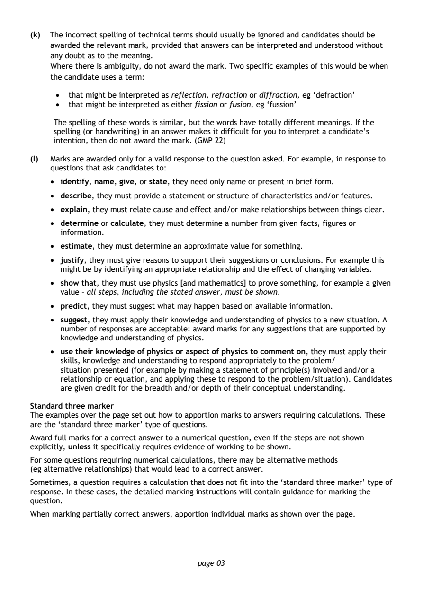
Selectable page text
(k) The incorrect spelling of technical terms should usually be ignored and candidates should be
awarded the relevant mark, provided that answers can be interpreted and understood without
any doubt as to the meaning.
Where there is ambiguity, do not award the mark. Two specific examples of this would be when
the candidate uses a term:
• that might be interpreted as reflection, refraction or diffraction, eg ‘defraction’
• that might be interpreted as either fission or fusion, eg ‘fussion’
The spelling of these words is similar, but the words have totally different meanings. If the
spelling (or handwriting) in an answer makes it difficult for you to interpret a candidate’s
intention, then do not award the mark. (GMP 22)
(l) Marks are awarded only for a valid response to the question asked. For example, in response to
questions that ask candidates to:
• identify, name, give, or state, they need only name or present in brief form.
• describe, they must provide a statement or structure of characteristics and/or features.
• explain, they must relate cause and effect and/or make relationships between things clear.
• determine or calculate, they must determine a number from given facts, figures or
information.
• estimate, they must determine an approximate value for something.
• justify, they must give reasons to support their suggestions or conclusions. For example this
might be by identifying an appropriate relationship and the effect of changing variables.
• show that, they must use physics [and mathematics] to prove something, for example a given
value – all steps, including the stated answer, must be shown.
• predict, they must suggest what may happen based on available information.
• suggest, they must apply their knowledge and understanding of physics to a new situation. A
number of responses are acceptable: award marks for any suggestions that are supported by
knowledge and understanding of physics.
• use their knowledge of physics or aspect of physics to comment on, they must apply their
skills, knowledge and understanding to respond appropriately to the problem/
situation presented (for example by making a statement of principle(s) involved and/or a
relationship or equation, and applying these to respond to the problem/situation). Candidates
are given credit for the breadth and/or depth of their conceptual understanding.
Standard three marker
The examples over the page set out how to apportion marks to answers requiring calculations. These
are the ‘standard three marker’ type of questions.
Award full marks for a correct answer to a numerical question, even if the steps are not shown
explicitly, unless it specifically requires evidence of working to be shown.
For some questions requiring numerical calculations, there may be alternative methods
(eg alternative relationships) that would lead to a correct answer.
Sometimes, a question requires a calculation that does not fit into the ‘standard three marker’ type of
response. In these cases, the detailed marking instructions will contain guidance for marking the
question.
When marking partially correct answers, apportion individual marks as shown over the page.
page 03PDF page 4
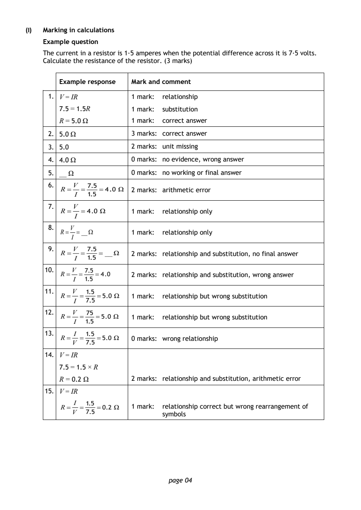
Selectable page text
(l) Marking in calculations
Example question
The current in a resistor is 1·5 amperes when the potential difference across it is 7·5 volts.
Calculate the resistance of the resistor. (3 marks)
Example response Mark and comment
1. V = IR 1 mark: relationship
7.5 = 1.5R 1 mark: substitution
R = 5.0 Ω 1 mark: correct answer
2. 5.0 Ω 3 marks: correct answer
3. 5.0 2 marks: unit missing
4. 4.0 Ω 0 marks: no evidence, wrong answer
5. __ Ω 0 marks: no working or final answer
6. V 7.5
R = = =4.0 Ω 2 marks: arithmetic error
I 1.5
7. V
R = =4.0 Ω 1 mark: relationship only
I
8. V
R= =__Ω 1 mark: relationship only
I
9. V 7.5
R = = = __Ω 2 marks: relationship and substitution, no final answer
I 1.5
10. V 7.5
R= = =4.0 2 marks: relationship and substitution, wrong answer
I 1.5
11. V 1.5
R= = =5.0 Ω 1 mark: relationship but wrong substitution
I 7.5
12. V 75
R= = =5.0 Ω 1 mark: relationship but wrong substitution
I 1.5
13. I 1.5
R= = =5.0 Ω 0 marks: wrong relationship
V 7.5
14. V = IR
7.5 = 1.5 × R
R = 0.2 Ω 2 marks: relationship and substitution, arithmetic error
15. V = IR
I 1.5
R= = =0.2 Ω 1 mark: relationship correct but wrong rearrangement of
V 7.5 symbols
page 04PDF page 5
Paper 2, Question 1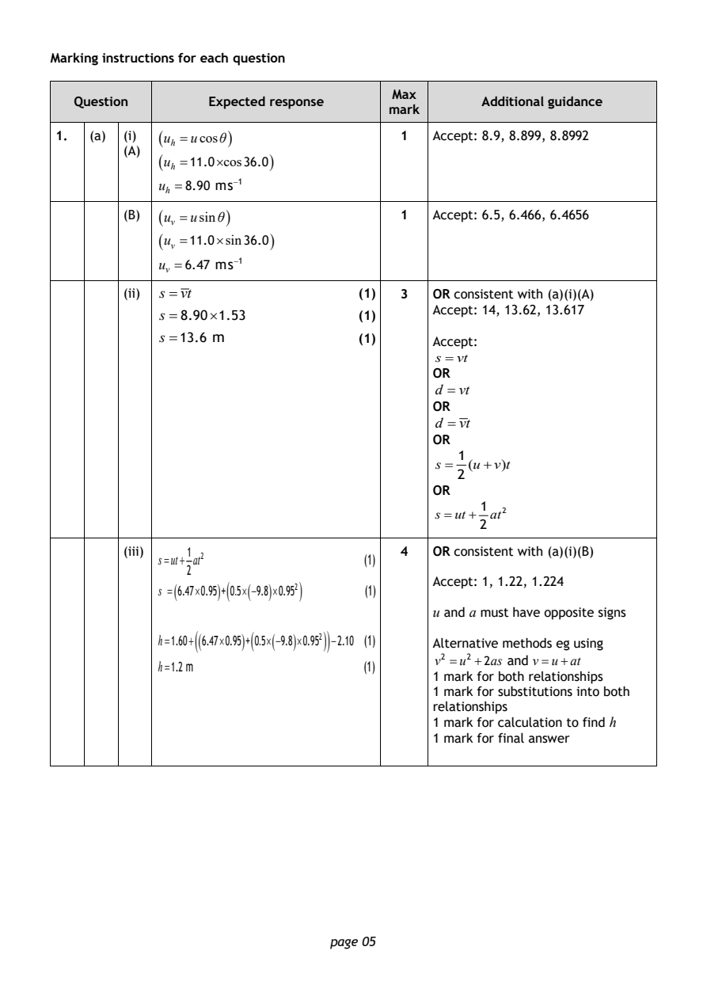
Selectable page text
Marking instructions for each question
Max
Question Expected response Additional guidance
mark
1. (a) (i) ( uₕ =ucosθ ) 1 Accept: 8.9, 8.899, 8.8992
(A)
( uₕ =11.0×cos36.0 )
uₕ =8.90 ms⁻¹
(B) ( uᵥ =usinθ ) 1 Accept: 6.5, 6.466, 6.4656
( uᵥ =11.0×sin36.0 )
uᵥ =6.47 ms⁻¹
(ii) s =vt (1) 3 OR consistent with (a)(i)(A)
Accept: 14, 13.62, 13.617
s =8.90×1.53 (1)
s =13.6 m (1) Accept:
s =vt
OR
d =vt
OR
d =vt
OR
1
s = (u+v)t
2
OR
1
s=ut+ at²
2
(iii) 1 4 OR consistent with (a)(i)(B)
s=ut+
2
at² (1)
Accept: 1, 1.22, 1.224
s =( 6.47×0.95 )+ ( 0.5×(−9.8 )×0.95² ) (1)
u and a must have opposite signs
h=1.60+ (( 6.47×0.95 )+ ( 0.5×(−9.8 )×0.95² )) −2.10 (1) Alternative methods eg using
v² =u² +2as and v=u+at
h=1.2 m (1)
1 mark for both relationships
1 mark for substitutions into both
relationships
1 mark for calculation to find h
1 mark for final answer
page 05PDF page 6
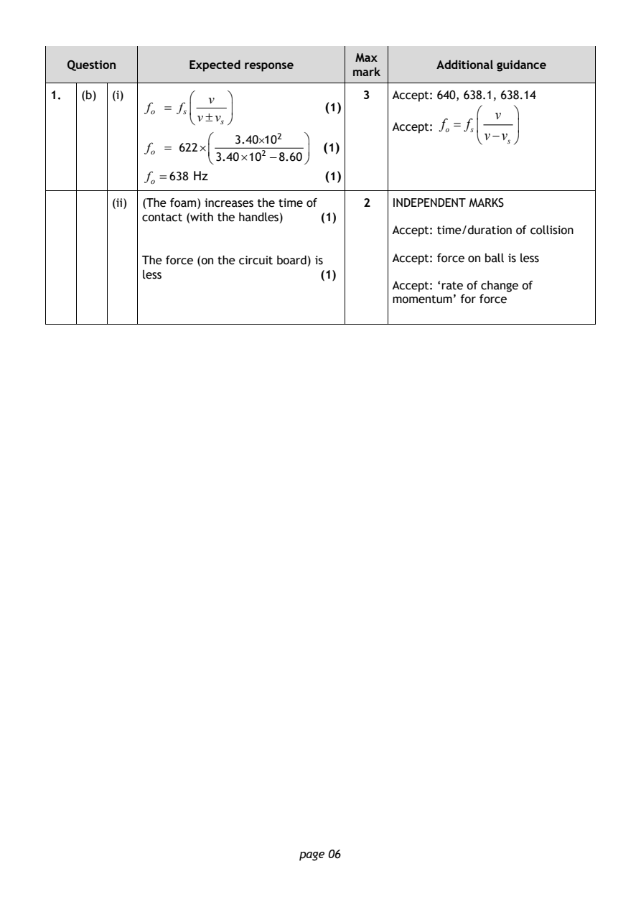
Selectable page text
Max
Question Expected response Additional guidance
mark
1. (b) (i) v 3 Accept: 640, 638.1, 638.14
fₒ = fₛ v±vₛ
(1)
Accept: fₒ = fₛ
v
3.40×10²
v−vₛ
fₒ = 622× (1)
3.40×10² −8.60
fₒ =638 Hz (1)
(ii) (The foam) increases the time of 2 INDEPENDENT MARKS
contact (with the handles) (1)
Accept: time/duration of collision
The force (on the circuit board) is Accept: force on ball is less
less (1)
Accept: ‘rate of change of
momentum’ for force
page 06PDF page 7
Paper 2, Question 2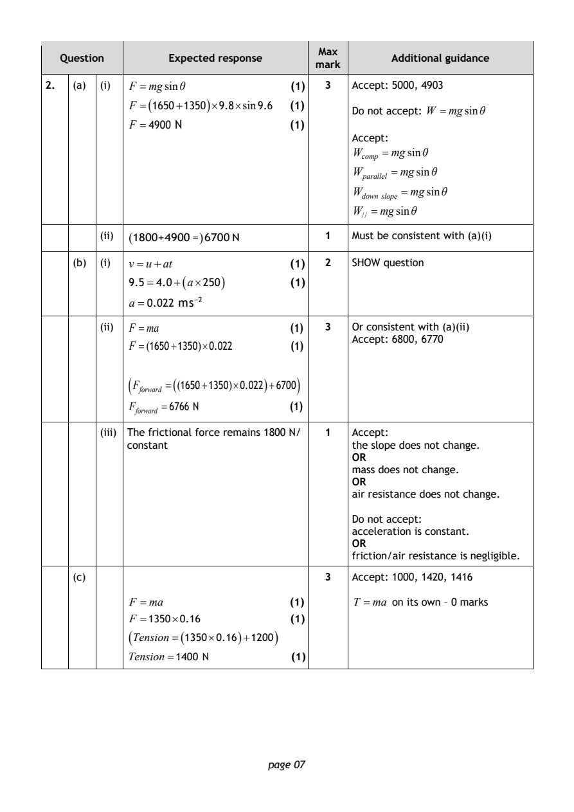
Selectable page text
Max
Question Expected response Additional guidance
mark
2. (a) (i) F =mgsinθ (1) 3 Accept: 5000, 4903
F =( 1650+1350 )×9.8×sin9.6 (1)
Do not accept: W =mgsinθ
F =4900 N (1)
Accept:
W_{c}ₒₘₚ =mgsinθ
Wₚₐᵣₐₗₗ =mgsinθ
el
W_{d}ₒ_{w}ₙ =mgsinθ
slope
W_{/}_{/} =mgsinθ
(ii) (1800+4900 =)6700 N 1 Must be consistent with (a)(i)
(b) (i) v =u+at (1) 2 SHOW question
9.5=4.0+( a×250 ) (1)
a =0.022 ms⁻²
(ii) F =ma (1) 3 Or consistent with (a)(ii)
Accept: 6800, 6770
F =(1650+1350)×0.022 (1)
( F_{f}ₒᵣ_{w}ₐᵣ_{d} =( (1650+1350)×0.022 )+6700 )
F_{f}ₒᵣ_{w}ₐᵣ_{d} =6766 N (1)
(iii) The frictional force remains 1800 N/ 1 Accept:
constant the slope does not change.
OR
mass does not change.
OR
air resistance does not change.
Do not accept:
acceleration is constant.
OR
friction/air resistance is negligible.
(c) 3 Accept: 1000, 1420, 1416
F =ma (1) T =ma on its own – 0 marks
F =1350×0.16 (1)
( Tension=( 1350×0.16 )+1200 )
Tension=1400 N (1)
page 07PDF page 8
Paper 2, Question 3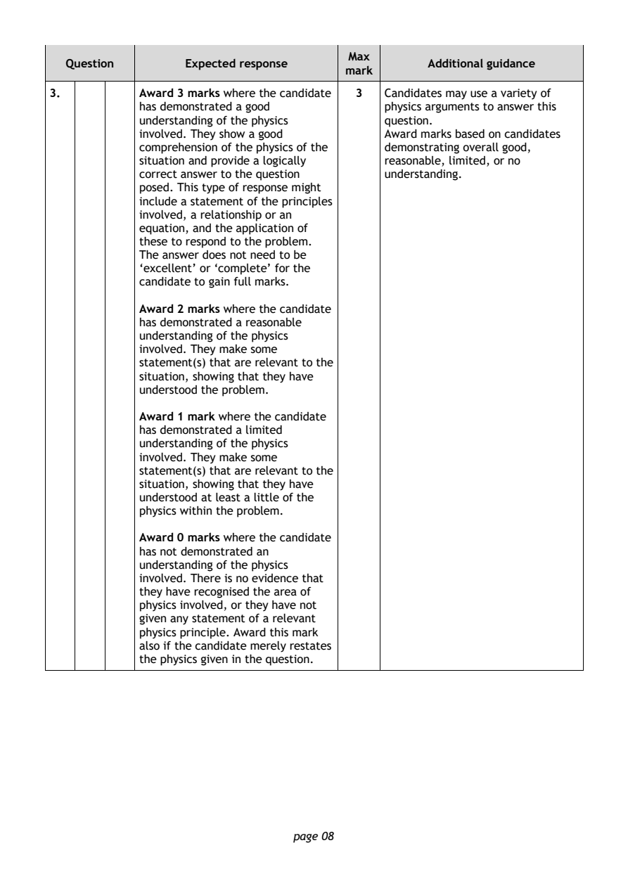
Selectable page text
Max
Question Expected response Additional guidance
mark
3. Award 3 marks where the candidate 3 Candidates may use a variety of
has demonstrated a good physics arguments to answer this
understanding of the physics question.
involved. They show a good Award marks based on candidates
comprehension of the physics of the demonstrating overall good,
situation and provide a logically reasonable, limited, or no
correct answer to the question understanding.
posed. This type of response might
include a statement of the principles
involved, a relationship or an
equation, and the application of
these to respond to the problem.
The answer does not need to be
‘excellent’ or ‘complete’ for the
candidate to gain full marks.
Award 2 marks where the candidate
has demonstrated a reasonable
understanding of the physics
involved. They make some
statement(s) that are relevant to the
situation, showing that they have
understood the problem.
Award 1 mark where the candidate
has demonstrated a limited
understanding of the physics
involved. They make some
statement(s) that are relevant to the
situation, showing that they have
understood at least a little of the
physics within the problem.
Award 0 marks where the candidate
has not demonstrated an
understanding of the physics
involved. There is no evidence that
they have recognised the area of
physics involved, or they have not
given any statement of a relevant
physics principle. Award this mark
also if the candidate merely restates
the physics given in the question.
page 08PDF page 9
Paper 2, Question 4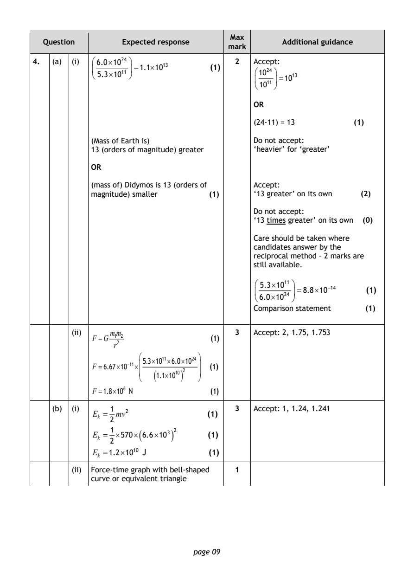
Selectable page text
Max
Question Expected response Additional guidance
mark
4. (a) (i) 6.0×10²⁴ 2 Accept:
5.3×10¹¹
=1.1×10¹³ (1)
10²⁴
=10¹³
10¹¹
OR
(24-11) = 13 (1)
(Mass of Earth is) Do not accept:
13 (orders of magnitude) greater ‘heavier’ for ‘greater’
OR
(mass of) Didymos is 13 (orders of Accept:
magnitude) smaller (1) ‘13 greater’ on its own (2)
Do not accept:
‘13 times greater’ on its own (0)
Care should be taken where
candidates answer by the
reciprocal method – 2 marks are
still available.
5.3×10¹¹
=8.8×10⁻¹⁴ (1)
6.0×10²⁴
Comparison statement (1)
(ii) m₁m₂ 3 Accept: 2, 1.75, 1.753
F =G (1)
r²
5.3×10¹¹×6.0×10²⁴
F
=6.67×10⁻¹¹×
(1)
( )
1.1×10¹⁰ ²
F =1.8×10⁶ N (1)
(b) (i) 1 3 Accept: 1, 1.24, 1.241
Eₖ = mv² (1)
2
1 ( )
Eₖ = ×570× 6.6×10³ ² (1)
2
Eₖ =1.2×10¹⁰ J (1)
(ii) Force-time graph with bell-shaped 1
curve or equivalent triangle
page 09PDF page 10
Paper 2, Question 5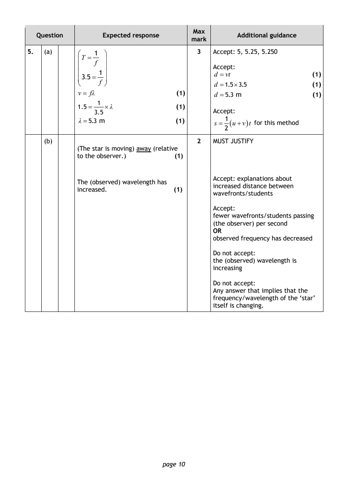
Selectable page text
Max
Question Expected response Additional guidance
mark
5. (a) 1 3 Accept: 5, 5.25, 5.250
T =
f
Accept:
1 d =vt (1)
3.5=
f d =1.5×3.5 (1)
v= fλ (1) d =5.3 m (1)
1
1.5= ×λ (1)
3.5 Accept:
λ=5.3 m (1) s = 1 (u+v)t for this method
2
(b) 2 MUST JUSTIFY
(The star is moving) away (relative
to the observer.) (1)
Accept: explanations about
The (observed) wavelength has
increased distance between
increased. (1)
wavefronts/students
Accept:
fewer wavefronts/students passing
(the observer) per second
OR
observed frequency has decreased
Do not accept:
the (observed) wavelength is
increasing
Do not accept:
Any answer that implies that the
frequency/wavelength of the ‘star’
itself is changing.
page 10PDF page 11
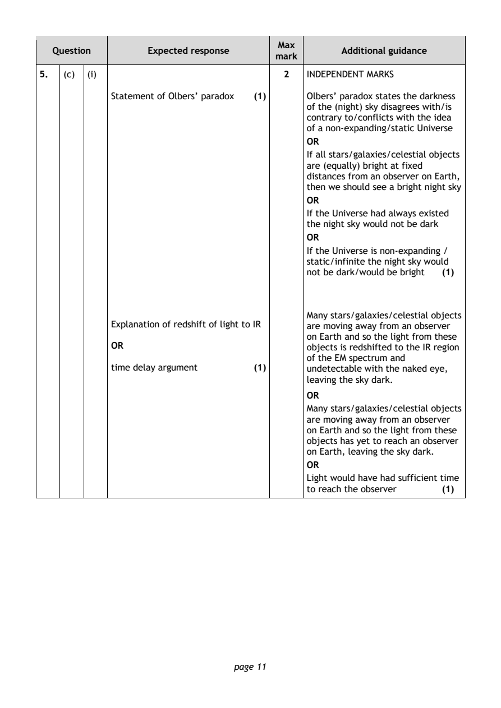
Selectable page text
Max
Question Expected response Additional guidance
mark
5. (c) (i) 2 INDEPENDENT MARKS
Statement of Olbers’ paradox (1) Olbers’ paradox states the darkness
of the (night) sky disagrees with/is
contrary to/conflicts with the idea
of a non-expanding/static Universe
OR
If all stars/galaxies/celestial objects
are (equally) bright at fixed
distances from an observer on Earth,
then we should see a bright night sky
OR
If the Universe had always existed
the night sky would not be dark
OR
If the Universe is non-expanding /
static/infinite the night sky would
not be dark/would be bright (1)
Many stars/galaxies/celestial objects
Explanation of redshift of light to IR are moving away from an observer
on Earth and so the light from these
OR objects is redshifted to the IR region
of the EM spectrum and
time delay argument (1) undetectable with the naked eye,
leaving the sky dark.
OR
Many stars/galaxies/celestial objects
are moving away from an observer
on Earth and so the light from these
objects has yet to reach an observer
on Earth, leaving the sky dark.
OR
Light would have had sufficient time
to reach the observer (1)
page 11PDF page 12
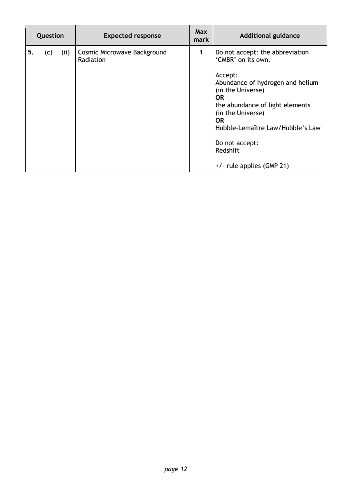
Selectable page text
Max
Question Expected response Additional guidance
mark
5. (c) (ii) Cosmic Microwave Background 1 Do not accept: the abbreviation
Radiation ‘CMBR’ on its own.
Accept:
Abundance of hydrogen and helium
(in the Universe)
OR
the abundance of light elements
(in the Universe)
OR
Hubble-Lemaître Law/Hubble’s Law
Do not accept:
Redshift
+/- rule applies (GMP 21)
page 12PDF page 13
Paper 2, Question 6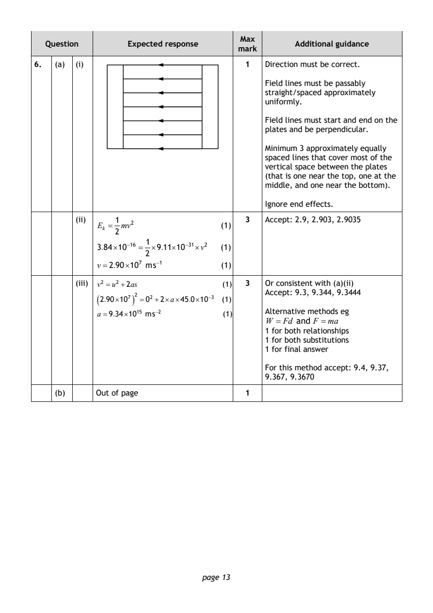
Selectable page text
Max
Question Expected response Additional guidance
mark
6. (a) (i) 1 Direction must be correct.
Field lines must be passably
straight/spaced approximately
uniformly.
Field lines must start and end on the
plates and be perpendicular.
Minimum 3 approximately equally
spaced lines that cover most of the
vertical space between the plates
(that is one near the top, one at the
middle, and one near the bottom).
Ignore end effects.
(ii) 1 3 Accept: 2.9, 2.903, 2.9035
Eₖ = mv² (1)
2
1
3.84×10⁻¹⁶ = ×9.11×10⁻³¹×v² (1)
2
v=2.90×10⁷ ms⁻¹ (1)
(iii) v² =u²+2as (1) 3 Or consistent with (a)(ii)
Accept: 9.3, 9.344, 9.3444
( )
2.90×10⁷ ² =0²+2×a×45.0×10⁻³ (1)
Alternative methods eg
a=9.34×10¹⁵ ms⁻² (1)
W = Fd and F =ma
1 for both relationships
1 for both substitutions
1 for final answer
For this method accept: 9.4, 9.37,
9.367, 9.3670
(b) Out of page 1
page 13PDF page 14
Paper 2, Question 7Selectable page text
Max
Question Expected response Additional guidance
mark
7. Award 3 marks where the candidate 3 Candidates may use a variety of
has demonstrated a good physics arguments to answer this
understanding of the physics question.
involved. They show a good Award marks based on candidates
comprehension of the physics of the demonstrating overall good,
situation and provide a logically reasonable, limited, or no
correct answer to the question understanding.
posed. This type of response might
include a statement of the principles
involved, a relationship or an
equation, and the application of
these to respond to the problem.
The answer does not need to be
‘excellent’ or ‘complete’ for the
candidate to gain full marks.
Award 2 marks where the candidate
has demonstrated a reasonable
understanding of the physics
involved. They make some
statement(s) that are relevant to the
situation, showing that they have
understood the problem.
Award 1 mark where the candidate
has demonstrated a limited
understanding of the physics
involved. They make some
statement(s) that are relevant to the
situation, showing that they have
understood at least a little of the
physics within the problem.
Award 0 marks where the candidate
has not demonstrated an
understanding of the physics
involved. There is no evidence that
they have recognised the area of
physics involved, or they have not
given any statement of a relevant
physics principle. Award this mark
also if the candidate merely restates
the physics given in the question.
page 14PDF page 15
Paper 2, Question 8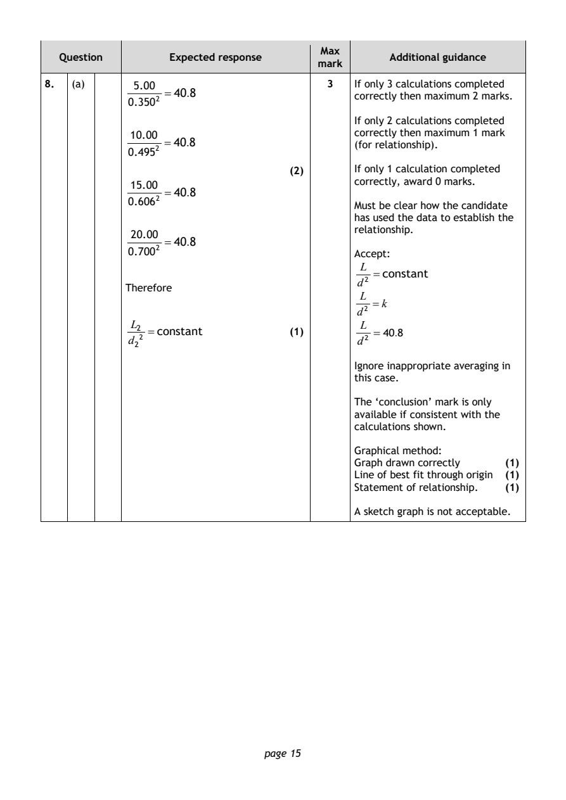
Selectable page text
Max
Question Expected response Additional guidance
mark
8. (a) 5.00 3 If only 3 calculations completed
=40.8
correctly then maximum 2 marks.
0.350²
If only 2 calculations completed
10.00 correctly then maximum 1 mark
=40.8
(for relationship).
0.495²
(2) If only 1 calculation completed
correctly, award 0 marks.
15.00
=40.8
0.606²
Must be clear how the candidate
has used the data to establish the
relationship.
20.00
=40.8
0.700² Accept:
L
=constant
d²
Therefore
L
=k
d²
L₂ L
=constant (1) =40.8
d₂² d²
Ignore inappropriate averaging in
this case.
The ‘conclusion’ mark is only
available if consistent with the
calculations shown.
Graphical method:
Graph drawn correctly (1)
Line of best fit through origin (1)
Statement of relationship. (1)
A sketch graph is not acceptable.
page 15PDF page 16
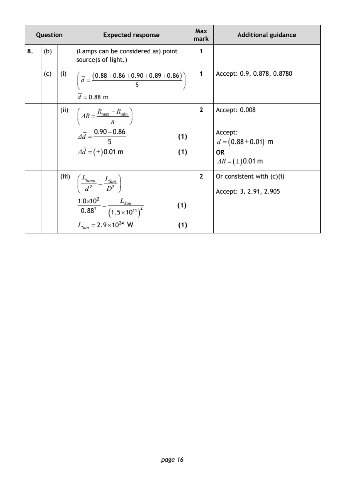
Selectable page text
Max
Question Expected response Additional guidance
mark
8. (b) (Lamps can be considered as) point 1
source(s of light.)
(c) (i) ( 0.88+0.86+0.90+0.89+0.86 ) 1 Accept: 0.9, 0.878, 0.8780
d =
5
d =0.88 m
(ii) Rₘₐₓ −Rₘᵢₙ 2 Accept: 0.008
ΔR=
n
0.90−0.86 Accept:
Δd = (1)
5 d =( 0.88±0.01 ) m
Δd =(±)0.01 m (1) OR
ΔR=(±)0.01 m
(iii) Lₗₐₘₚ L_{S}ᵤₙ 2 Or consistent with (c)(i)
=
d² D² Accept: 3, 2.91, 2.905
1.0×10² L_{S}ᵤₙ
= (1)
0.88² ( 1.5×10¹¹ ) ²
L_{S}ᵤₙ =2.9×10²⁴ W (1)
page 16PDF page 17
Paper 2, Question 9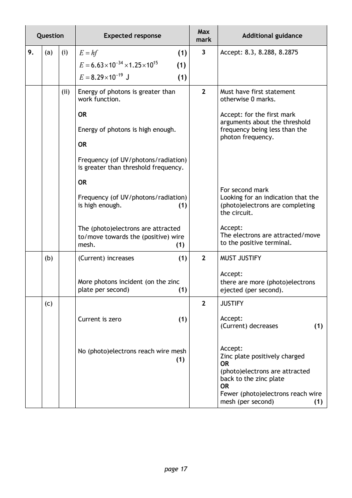
Selectable page text
Max
Question Expected response Additional guidance
mark
9. (a) (i) E =hf (1) 3 Accept: 8.3, 8.288, 8.2875
E =6.63×10⁻³⁴×1.25×10¹⁵ (1)
E =8.29×10⁻¹⁹ J (1)
(ii) Energy of photons is greater than 2 Must have first statement
work function. otherwise 0 marks.
OR Accept: for the first mark
arguments about the threshold
Energy of photons is high enough. frequency being less than the
photon frequency.
OR
Frequency (of UV/photons/radiation)
is greater than threshold frequency.
OR
For second mark
Frequency (of UV/photons/radiation) Looking for an indication that the
is high enough. (1) (photo)electrons are completing
the circuit.
The (photo)electrons are attracted Accept:
to/move towards the (positive) wire The electrons are attracted/move
to the positive terminal.
mesh. (1)
(b) (Current) increases (1) 2 MUST JUSTIFY
Accept:
More photons incident (on the zinc there are more (photo)electrons
plate per second) (1) ejected (per second).
(c) 2 JUSTIFY
Current is zero (1) Accept:
(Current) decreases (1)
Accept:
No (photo)electrons reach wire mesh
Zinc plate positively charged
(1)
OR
(photo)electrons are attracted
back to the zinc plate
OR
Fewer (photo)electrons reach wire
mesh (per second) (1)
page 17PDF page 18
Paper 2, Question 10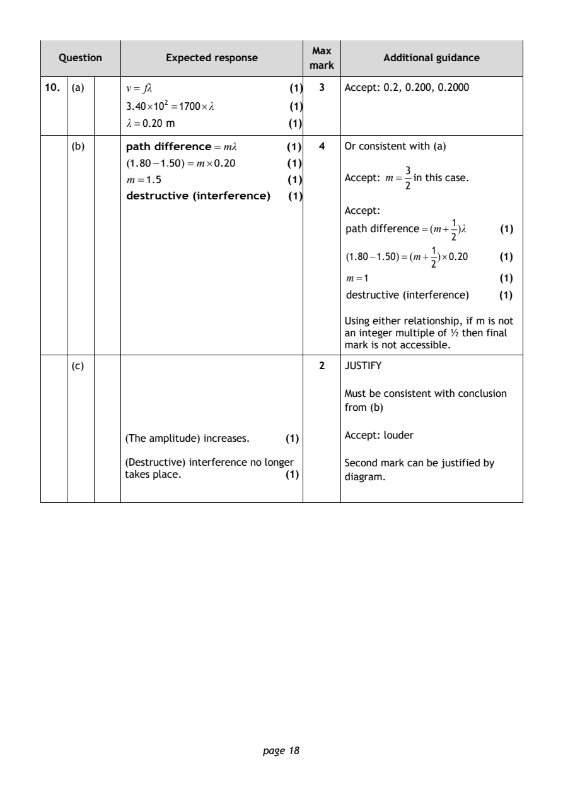
Selectable page text
Max
Question Expected response Additional guidance
mark
10. (a) v= fλ (1) 3 Accept: 0.2, 0.200, 0.2000
3.40×10² =1700×λ (1)
λ=0.20 m (1)
(b) path difference=mλ (1) 4 Or consistent with (a)
(1.80−1.50)=m×0.20 (1)
3
m=1.5 (1) Accept: m= in this case.
2
destructive (interference) (1)
Accept:
1
path difference=(m+ )λ (1)
2
1
(1.80−1.50)=(m+ )×0.20 (1)
2
m=1 (1)
destructive (interference) (1)
Using either relationship, if m is not
an integer multiple of ½ then final
mark is not accessible.
(c) 2 JUSTIFY
Must be consistent with conclusion
from (b)
Accept: louder
(The amplitude) increases. (1)
(Destructive) interference no longer Second mark can be justified by
takes place. (1) diagram.
page 18PDF page 19
Paper 2, Question 11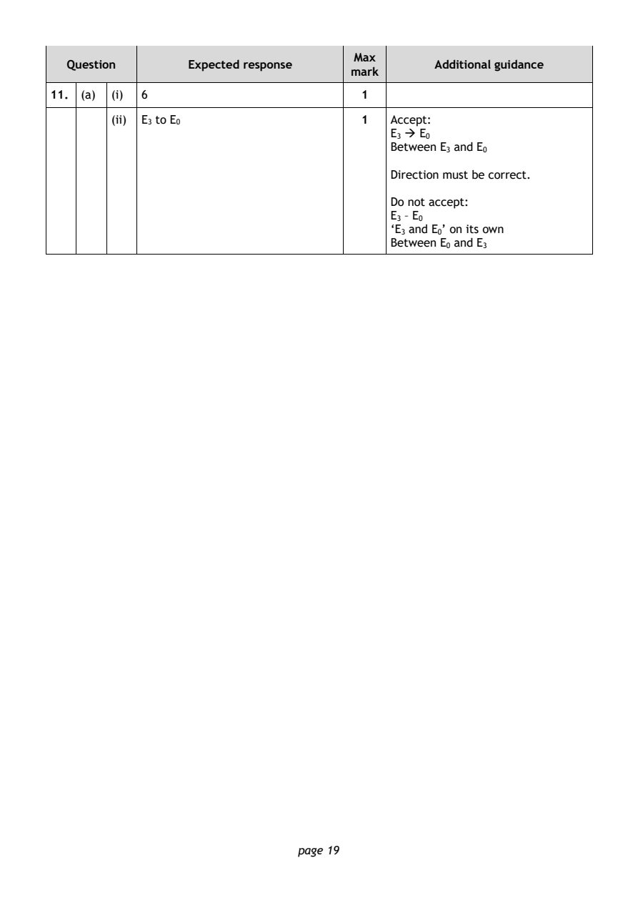
Selectable page text
Max
Question Expected response Additional guidance
mark
11. (a) (i) 6 1
(ii) E to E 1 Accept:
3 0
E E
B³etwee⁰n E and E
3 0
Direction must be correct.
Do not accept:
E – E
3
‘E an⁰d E ’ on its own
Be³tween ⁰E and E
0 3
page 19PDF page 20
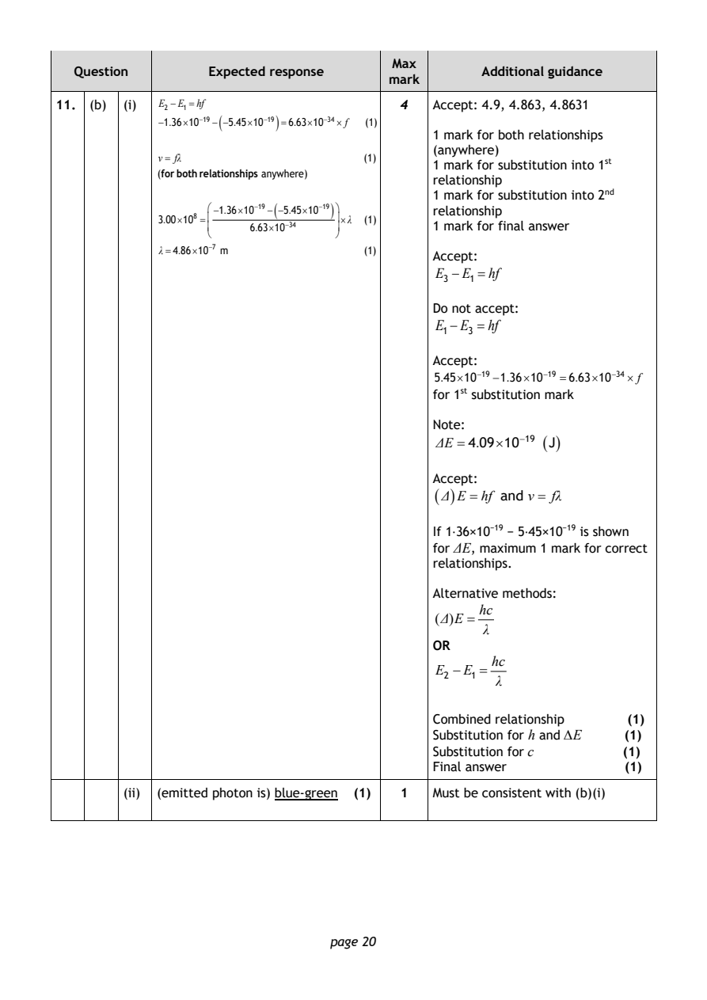
Selectable page text
Max
Question Expected response Additional guidance
mark
11. (b) (i) E₂−E₁=hf 4 Accept: 4.9, 4.863, 4.8631
−1.36×10⁻¹⁹−
(
−5.45×10⁻¹⁹
)
=6.63×10⁻³⁴×f (1)
1 mark for both relationships
(anywhere)
v= fλ (1)
1 mark for substitution into 1^{s}^{t}
(for both relationships anywhere)
relationship
1 mark for substitution into 2ⁿ^{d}
−1.36×10⁻¹⁹− ( −5.45×10⁻¹⁹ ) relationship
3.00×10⁸= ×λ (1)
6.63×10⁻³⁴ 1 mark for final answer
λ=4.86×10⁻⁷ m (1)
Accept:
E₃−E₁=hf
Do not accept:
E₁−E₃ =hf
Accept:
5.45×10⁻¹⁹−1.36×10⁻¹⁹ =6.63×10⁻³⁴× f
for 1^{s}^{t} substitution mark
Note:
ΔE =4.09×10⁻¹⁹ (J)
Accept:
(Δ)E =hf and v= fλ
If 1 36×10⁻¹⁹ − 5 45×10⁻¹⁹ is shown
for ΔE, maximum 1 mark for correct
rela⋅tionships. ⋅
Alternative methods:
hc
(Δ)E =
λ
OR
hc
E₂ −E₁=
λ
Combined relationship (1)
Substitution for h and ∆E (1)
Substitution for c (1)
Final answer (1)
(ii) (emitted photon is) blue-green (1) 1 Must be consistent with (b)(i)
page 20PDF page 21
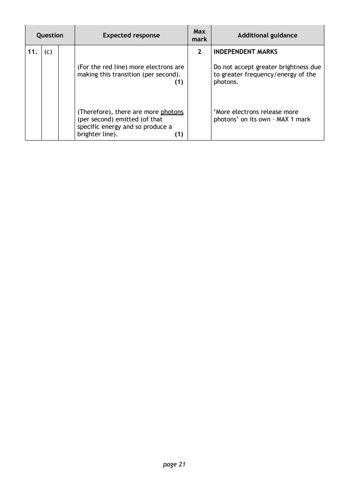
Selectable page text
Max
Question Expected response Additional guidance
mark
11. (c) 2 INDEPENDENT MARKS
(For the red line) more electrons are Do not accept greater brightness due
making this transition (per second). to greater frequency/energy of the
(1) photons.
(Therefore), there are more photons ‘More electrons release more
(per second) emitted (of that photons’ on its own – MAX 1 mark
specific energy and so produce a
brighter line). (1)
page 21PDF page 22
Paper 2, Question 12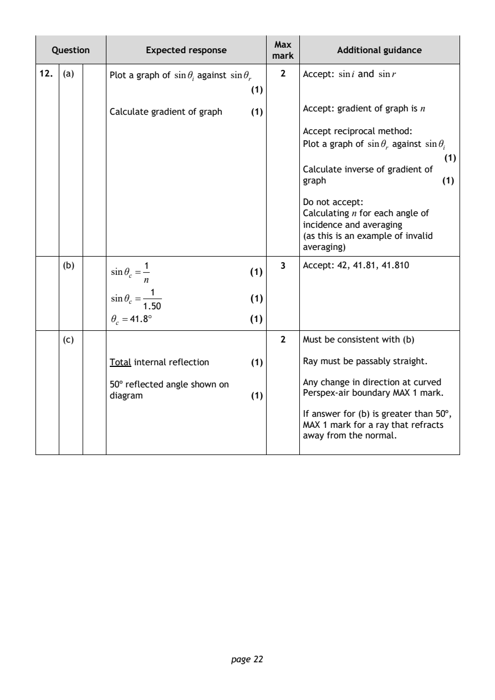
Selectable page text
Max
Question Expected response Additional guidance
mark
12. (a) Plot a graph of sinθᵢ against sinθᵣ 2 Accept: sini and sinr
(1)
Accept: gradient of graph is n
Calculate gradient of graph (1)
Accept reciprocal method:
Plot a graph of sinθᵣ against sinθᵢ
(1)
Calculate inverse of gradient of
graph (1)
Do not accept:
Calculating n for each angle of
incidence and averaging
(as this is an example of invalid
averaging)
(b) 1 3 Accept: 42, 41.81, 41.810
sinθ_{c} = (1)
n
1
sinθ_{c} = (1)
1.50
θ_{c} =41.8° (1)
(c) 2 Must be consistent with (b)
Total internal reflection (1) Ray must be passably straight.
50º reflected angle shown on Any change in direction at curved
Perspex-air boundary MAX 1 mark.
diagram (1)
If answer for (b) is greater than 50º,
MAX 1 mark for a ray that refracts
away from the normal.
page 22PDF page 23
Paper 2, Question 13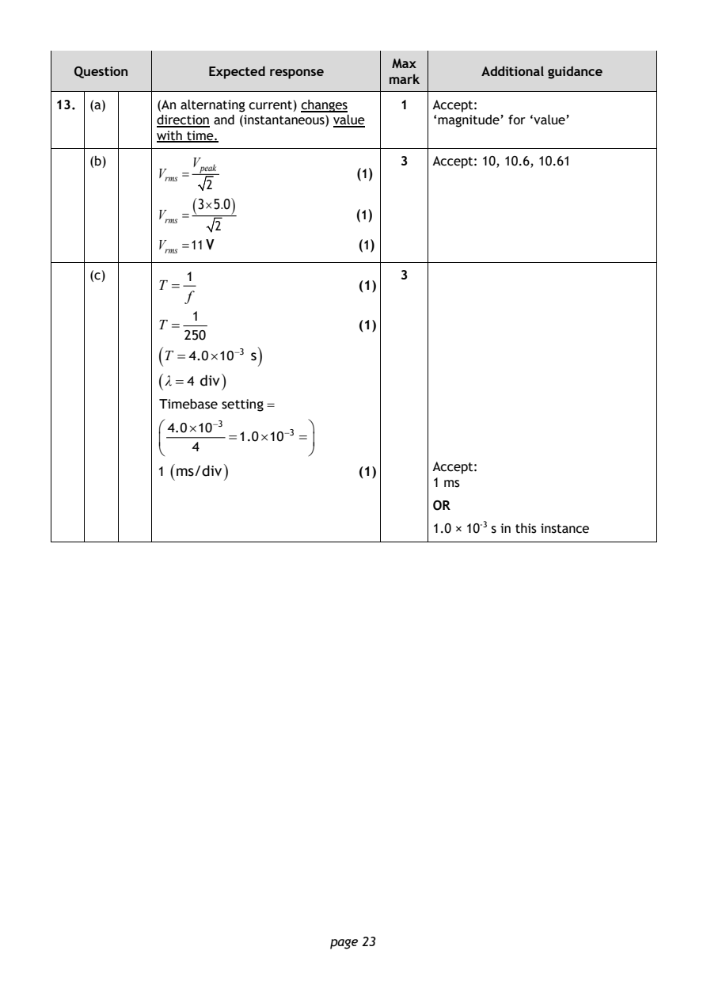
Selectable page text
Max
Question Expected response Additional guidance
mark
13. (a) (An alternating current) changes 1 Accept:
direction and (instantaneous) value ‘magnitude’ for ‘value’
with time.
(b) Vₚₑₐₖ 3 Accept: 10, 10.6, 10.61
Vᵣₘₛ = (1)
2
(3×5.0)
Vᵣₘₛ = (1)
2
Vᵣₘₛ =11 V (1)
(c) 1 3
T = (1)
f
1
T = (1)
250
( )
T =4.0×10⁻³ s
( λ=4 div)
Timebase setting=
4.0×10⁻³
=1.0×10⁻³ =
4
1
(ms/div)
(1)
Accept:
1 ms
OR
1.0 × 10⁻³ s in this instance
page 23PDF page 24
Paper 2, Question 14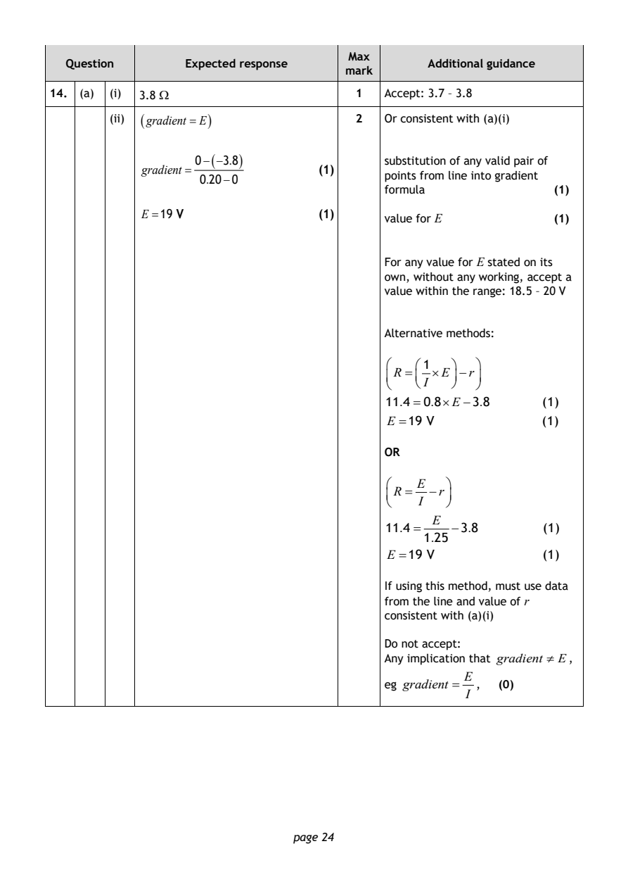
Selectable page text
Max
Question Expected response Additional guidance
mark
14. (a) (i) 3.8 Ω 1 Accept: 3.7 – 3.8
(ii) ( gradient =E ) 2 Or consistent with (a)(i)
0−(−3.8)
substitution of any valid pair of
gradient = (1)
0.20−0 points from line into gradient
formula (1)
E =19 V (1)
value for E (1)
For any value for E stated on its
own, without any working, accept a
value within the range: 18.5 – 20 V
Alternative methods:
1
R = ×E −r
I
11.4 =0.8×E−3.8 (1)
E =19 V (1)
OR
E
R = −r
I
E
11.4 = −3.8 (1)
1.25
E =19 V (1)
If using this method, must use data
from the line and value of r
consistent with (a)(i)
Do not accept:
Any implication that gradient ≠ E,
E
eg gradient = , (0)
I
page 24PDF page 25
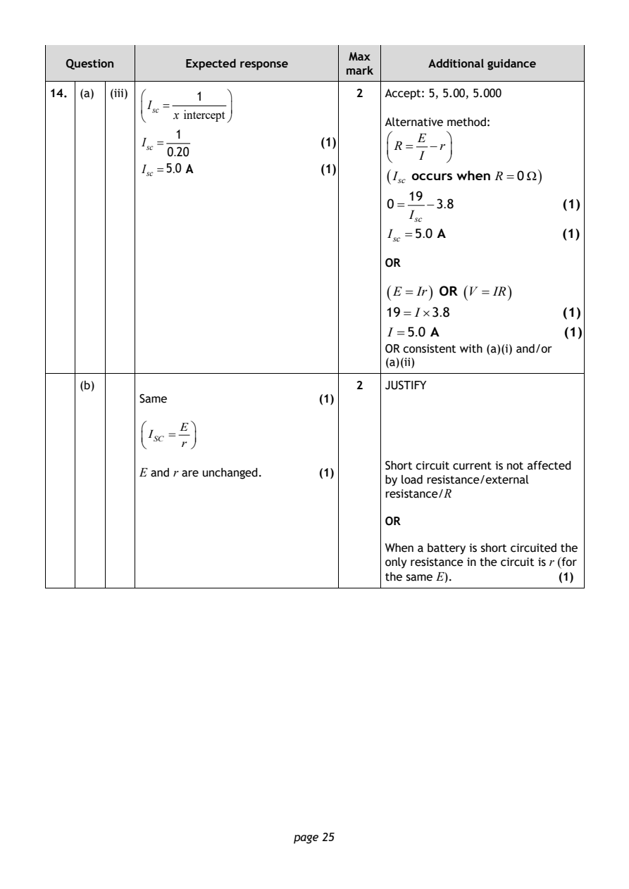
Selectable page text
Max
Question Expected response Additional guidance
mark
14. (a) (iii) 1 2 Accept: 5, 5.00, 5.000
Iₛ_{c} =
x intercept
Alternative method:
1
E
Iₛ_{c} = (1) R = −r
0.20
I
Iₛ_{c} =5.0 A (1)
( Iₛ_{c} occurs when R =0 Ω )
19
0 = −3.8 (1)
Iₛ_{c}
Iₛ_{c} =5.0 A (1)
OR
( E = Ir ) OR ( V = IR )
19= I×3.8 (1)
I =5.0 A (1)
OR consistent with (a)(i) and/or
(a)(ii)
(b) 2 JUSTIFY
Same (1)
E
I_{S}_{C} =
r
Short circuit current is not affected
E and r are unchanged. (1)
by load resistance/external
resistance/R
OR
When a battery is short circuited the
only resistance in the circuit is r (for
the same E). (1)
page 25PDF page 26
Paper 2, Question 15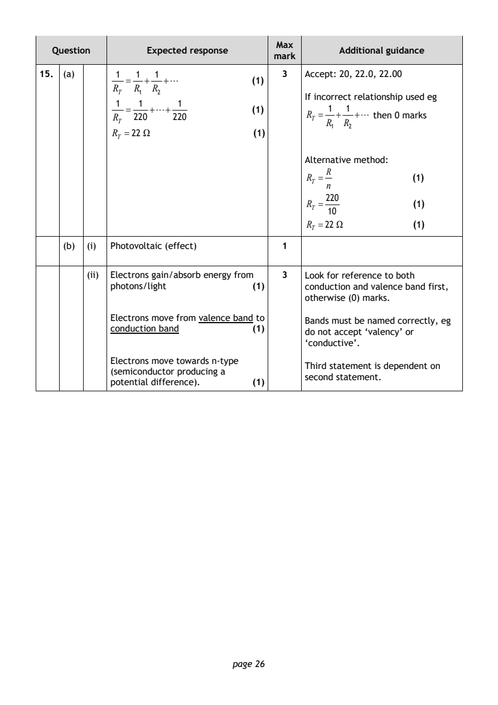
Selectable page text
Max
Question Expected response Additional guidance
mark
15. (a) 1 1 1 3 Accept: 20, 22.0, 22.00
= + +⋅⋅⋅ (1)
R_{T} R₁ R₂
If incorrect relationship used eg
1 1 1
= +⋅⋅⋅+ (1) 1 1
R_{T} 220 220 R_{T} = + +⋅⋅⋅ then 0 marks
R₁ R₂
R_{T} =22 Ω (1)
Alternative method:
R
R_{T} = (1)
n
220
R_{T} = (1)
10
R_{T} =22 Ω (1)
(b) (i) Photovoltaic (effect) 1
(ii) Electrons gain/absorb energy from 3 Look for reference to both
photons/light (1) conduction and valence band first,
otherwise (0) marks.
Electrons move from valence band to
Bands must be named correctly, eg
conduction band (1)
do not accept ‘valency’ or
‘conductive’.
Electrons move towards n-type
Third statement is dependent on
(semiconductor producing a
second statement.
potential difference). (1)
page 26PDF page 27
Paper 2, Question 16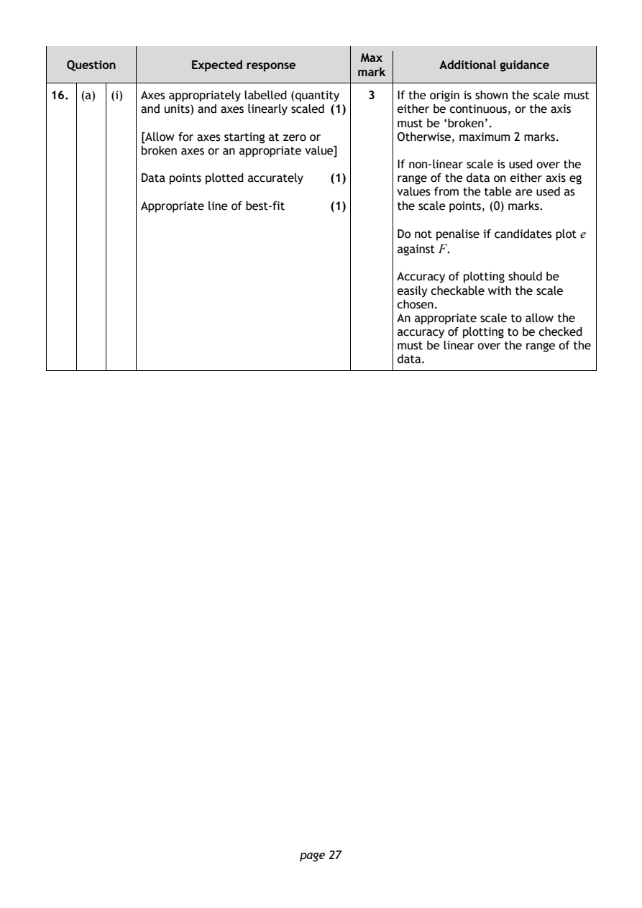
Selectable page text
Max
Question Expected response Additional guidance
mark
16. (a) (i) Axes appropriately labelled (quantity 3 If the origin is shown the scale must
and units) and axes linearly scaled (1) either be continuous, or the axis
must be ‘broken’.
[Allow for axes starting at zero or Otherwise, maximum 2 marks.
broken axes or an appropriate value]
If non-linear scale is used over the
Data points plotted accurately (1) range of the data on either axis eg
values from the table are used as
Appropriate line of best-fit (1) the scale points, (0) marks.
Do not penalise if candidates plot e
against F.
Accuracy of plotting should be
easily checkable with the scale
chosen.
An appropriate scale to allow the
accuracy of plotting to be checked
must be linear over the range of the
data.
page 27PDF page 28
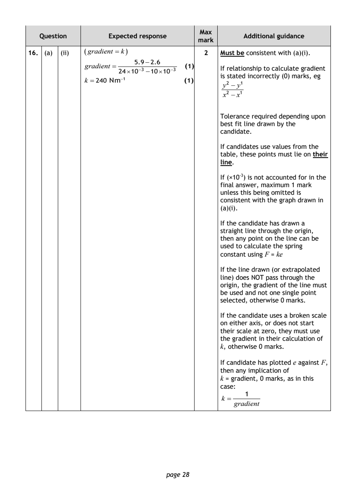
Selectable page text
Max
Question Expected response Additional guidance
mark
16. (a) (ii)
(gradient =k)
2 Must be consistent with (a)(i).
5.9−2.6
gradient = (1)
If relationship to calculate gradient
24×10⁻³ −10×10⁻³
is stated incorrectly (0) marks, eg
k =240 Nm⁻¹ (1)
y² − y¹
x² −x¹
Tolerance required depending upon
best fit line drawn by the
candidate.
If candidates use values from the
table, these points must lie on their
line.
If (×10⁻³) is not accounted for in the
final answer, maximum 1 mark
unless this being omitted is
consistent with the graph drawn in
(a)(i).
If the candidate has drawn a
straight line through the origin,
then any point on the line can be
used to calculate the spring
constant using F = ke
If the line drawn (or extrapolated
line) does NOT pass through the
origin, the gradient of the line must
be used and not one single point
selected, otherwise 0 marks.
If the candidate uses a broken scale
on either axis, or does not start
their scale at zero, they must use
the gradient in their calculation of
k, otherwise 0 marks.
If candidate has plotted e against F,
then any implication of
k = gradient, 0 marks, as in this
case:
1
k =
gradient
page 28PDF page 29
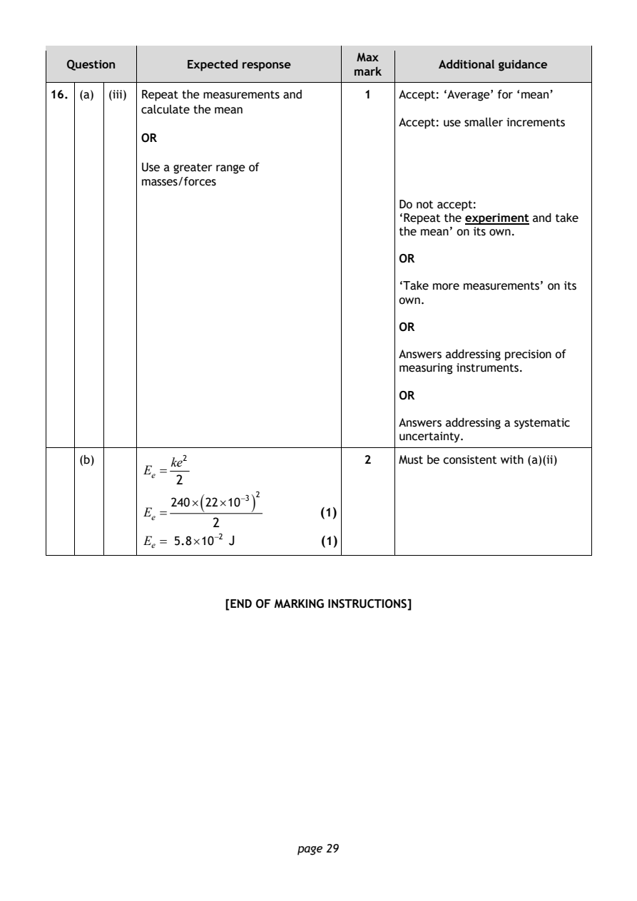
Selectable page text
Max
Question Expected response Additional guidance
mark
16. (a) (iii) Repeat the measurements and 1 Accept: ‘Average’ for ‘mean’
calculate the mean
Accept: use smaller increments
OR
Use a greater range of
masses/forces
Do not accept:
‘Repeat the experiment and take
the mean’ on its own.
OR
‘Take more measurements’ on its
own.
OR
Answers addressing precision of
measuring instruments.
OR
Answers addressing a systematic
uncertainty.
(b) ke² 2 Must be consistent with (a)(ii)
Eₑ =
2
( )
240× 22×10⁻³ ²
Eₑ = (1)
2
Eₑ = 5.8×10⁻² J (1)
[END OF MARKING INSTRUCTIONS]
page 29